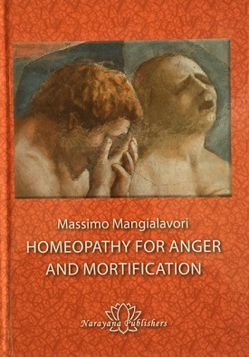

Homeopathy for Anger and Mortification
by Massimo Mangialavori, MD
Item # MANHOM
Massimo Mangliavori, MD
Massimo Mangliavori, MD, is one of the most respected teachers of classical homeopaths in the world. This short book (98-pages) provides deep insight into issues around ANGER and MORTIFICATION.
The famous Italian homeopath Massimo Mangialavori describes in this work the most important homeopathic remedies that have proved particularly useful for these problems in his practice. He highlights especially the less well-known and often forgotten remedies.
He presents impressive cases of Ipecacuanha, Senega officinalis, and Magnetis polus australis, differentiating these in detail from other remedies such as Ferrum magneticum, Antimonium tartaricum, Chelidonium, Ignatia, the Bromine, and Chlorine salts, Paris quadrifolia, Chamomilla, Staphisagria as well as the Scrophulariaceae and Liliaceae.
Massimo Mangialavori is known for his graphic remedy descriptions in which he brings out the essential nuances of homeopathic remedies in a concise and vivid way. This handy booklet is a great opportunity to get to know the working methods of Massimo Mangialavori in this important area.
Table of Contents
Introduction …………………………………………………………………………… 7
Important Rubrics for Anger, Vexation, and Mortification………………..12
Ipecacuanha………………………………………………………………………….. 14
Case of Umberto……………………………………………………………………..14
Impressions of the case …………………………………………………………….20
Repertorization ………………………………………………………………………..21
Follow-Up………………………………………………………………………………22
Ipecacuanha ……………………………………………………………………………24
Differential Diagnosis: Liliaceae …………………………………………………..28
Senega officinalis ……………………………………………………………………. 29
Case of Hannibal ……………………………………………………………………..29
Impressions of the case ……………………………………………………………..34
Repertorization ………………………………………………………………………..35
Follow-Up………………………………………………………………………………36
Senega officinalis ……………………………………………………………………..39
Differential Diagnosis: Antimonium tartaricum…………………………………40
Magnetis polus australis …………………………………………………………… 42
Case of Anita…………………………………………………………………………..42
Impressions of the case ……………………………………………………………..47
Repertorization ………………………………………………………………………..48
Follow-Up……………………………………………………………………………….49
Magnetis polus australis………………………………………………………………53
Differential Diagnosis: Ferrum magneticum……………………………………..56
Further Important Remedies for Anger and Mortification………………… 57
Paris quadrifolia ……………………………………………………………………….59
Chelidonium……………………………………………………………………………..61
Ignatia……………………………………………………………………………………..63
Halogens …………………………………………………………………………………64
Bromine salts ……………………………………………………………………………64
Chlorine salts ……………………………………………………………………………65
Chamomilla ………………………………………………………………………………66
Scrophulariaceae………………………………………………………………………..68
Gratiola ……………………………………………………………………………………68
Digitalis ……………………………………………………………………………………68
Euphrasia………………………………………………………………………………….69
Staphysagria ……………………………………………………………………………..70
Appendix: Mangialavori’s Repertory Additions……………………………….. 71
Chamomilla………………………………………………………………………………..71
Chelidonium ………………………………………………………………………………73
Digitalis …………………………………………………………………………………….75
Euphrasia…………………………………………………………………………………..77
Ferrum magneticum …………………………………………………………………….78
Gratiola …………………………………………………………………………………….78
Ignatia ………………………………………………………………………………………79
Ipecacuanha ………………………………………………………………………………82
Magnetis polus australis ……………………………………………………………….84
Paris quadrifolia ………………………………………………………………………….84
Senega officinalis…………………………………………………………………………85
Staphysagria………………………………………………………………………………86
AN EXCERPT from “The Introduction” to THIS BOOK:
Mortification is, to a greater or lesser degree, a common topic in homeopathic practice. Staphysagria is a classic example and is extremely well known. Other remedies have been forgotten or are not very well known. The profiles of people for whom mortification is an issue can vary greatly.
The word “mortification” comes from the Latin mortificus meaning “causing death” (mors, mortis, death + facere, make, produce). This indicates that we are dealing with a far more difficult topic than simply anger or rage. It has a lot to do with the key area of self-worth. Somebody with a large ego has a major problem dealing with mortification, whereas someone with a lesser sense of self-esteem will find that it simply reinforces their low opinion of themselves.
Mortification can be expressed as a feeling of shame, to be ashamed, or a wounding of the person’s honor. Another meaning is the loss of prestige or self-confidence. Interestingly, mortification in the olden days was used to describe gangrene, where there was necrosis.
“Vexation” implies the state of being annoyed, frustrated or worried. The root comes from the Latin vexare meaning tormenting, the idea of agitation or shaking strongly. This can come as a result of injustice, repression, and bullying, or
consequences of abuse or of being severely molested. Vexation is directly related to mortification and is the step before.
Vexation can be: anger triggered by an annoying disturbance; strong emotion – a feeling directed at a real or imagined grievance; a feeling of annoyance due to hindrance or criticism; a feeling of intense annoyance caused by being tormented:
“His vexation was so great that he wanted to destroy the brat.”
With the issue of mortification we need to consider the major problem of narcissistic balance. This word “narcissistic” is commonly used only in the negative form. The idea of “narcissism” is, however, much more sophisticated. Positive
narcissism allows one to appear in public, talk, play the piano, or become a leader.
This idea of balance is better suited to describe this problem than the idea of self-confidence alone. The goal of every good therapy should be to promote the positive narcissism of our patients.
Aphorism 9 of the Organon states this as well: “In the healthy condition of man, the spiritual vital force (autocracy), the dynamis that animates the material body (organism), rules with unbounded sway, and retains all the parts of the organism in admirable, harmonious, vital operation, as regards both sensations and functions, so that our indwelling, reason-gifted mind can freely employ this living, healthy instrument for the higher purposes of our existence.”
On the one hand, we have to look at the objective mortification that the patient has experienced; on the other hand, we need to assess the individual reaction of the patient due to their personality, which reacts according to its makeup, and
this in turn depends on the patient’s inner resources and compensation strategies.
From the homeopathic point of view, the following questions are significant in connection with mortification and anger:
• What kind of vexation causes the patient to react most sensitively?
• How does a patient react to mortification or annoyance?
• Which symptoms arise from this reaction?
Self-esteem is intimately connected with the issue of vexation and mortification. It is a fundamental aspect of every person and as such in Mangialavori’s hierarchy is considered to be a Motif or grand thematic area (see Praxis). Self-esteem has enormous importance from the psychological, anthropological and ideological perspectives, with universal significance.
The excess or lack of self-esteem can be a fundamental aspect of many homeopathic prescriptions. A sense of self-esteem that is too high indicates remedies such as Aurum, Platinum, and some Gramineae (Poaceae). At the other end of the spectrum there are remedies such as Lycopodium, Silicea, Gelsemium, Nitricum salts and some Rutaceae. Some remedies have been well enough proved in terms of the problem of self-respect, whereas others have not been at all.
Since self-esteem is such a major issue in many patients and remedies, it is extremely important to establish precisely its degree, special features and modalities for differential diagnosis. (This is obviously true of many other major issues too.) Self-esteem influences mood, character, relationships, and sexuality, and is related to many kinds of somatization.
Some typical examples of displacement and somatization when there are problems of narcissistic balance, with vexation and mortification, are:
• Anticipatory anxiety
• Fear about accomplishing “what has to be done”
• Blockage from fear of failure or errors
• Diarrhea
• Impotence
• Panic
• Trembling
• Perspiration
• Sleep disturbances
• Premature ejaculation
Case of Umberto
This is a difficult case of a 16-year-old young man in which neither the family nor the patient really cooperated. Umberto’s parents are separated and he finds himself in the middle. He is completely against homeopathic treatment since he views it as a kind of “drugstore treatment” in which various low potencies are administered in alternation
and as mixtures.
The consultation takes place after lengthy negotiations on the phone. The mother had requested a very urgent consultation but was not at all flexible. The proposed appointments were unsuitable for her. As time went by, I noticed that the problem was chiefly due to her husband’s resistance. I told the woman that I could only conduct the treatment with her husband’s consent since the patient had not yet come of age. After a lengthy, tense silence, the mother said that she would need a few days but that she was sure she could convince her husband to agree.
Umberto is a pleasant boy with an appealing and an athletic build. He immediately tells me that he has been promised some skis as a reward for the consultation – he is a freestyle downhill skier. This is a highly risky type of sport. Despite the reward, he is very annoyed that he has to talk with me.
He begins:
“I’ve had stomach problems since I was little. A few years ago they gave me antiinflammatories for a cartilage problem and I got an ulcer. They treated me but I was left with stomach pain. Some things just don’t go away!”
Can you tell me more about your stomach ulcer?
“I don’t remember much … only terrible pain and that I was always vomiting and then that gastroscope … I think that was one of the worst experiences of my life.”
Why was it so awful?
“Because when there’s something in my stomach, I get rid of it immediately, whereas that gadget inside my stomach kept going down instead of coming up.”
What’s it like with food?
“It’s true that food goes down … but if it passes down a tube, the natural reflex is to spit it out … don’t you think?”
For such patients, invasive examinations are extremely threatening (think of the many symptoms of Staphysagria due to the after-effects of operations). It is not just the mechanical investigation – it is also the way the doctor tries to invade their world to try to understand them. This can be experienced as equally “injurious” and threatening.
His mother explains:
“He was 10 years old when he had his first hospital procedure because they were sure that he was allergic, but then tests showed that he had Helicobacter.”
What can you tell me about Umberto’s stomach problems?
“I only know that for as long as I can remember, he’s had pain in his stomach and he’s been vomiting often since he was very young. We reckon he had whooping cough when he was 4 months old and since then the vomiting has never stopped. It’s only been getting worse since then.”
He had whooping cough?
“The cough was very strong then and when he had attacks, we were afraid that he would suffocate … poor thing, the capillaries of his little eyes burst and sometimes he vomited up blood. He’s always reacted like that, but the incredible thing was that after the vomiting, he was OK. Even after he vomited, he wanted another bottle of milk.”
This is typical for these patients but also generally typical for this remedy: vomiting was very important for him because afterwards he felt much better, even more energetic and stimulated!
How did it continue?
“Since the whooping cough, he’s always vomited very easily … he couldn’t keep down his food at all and my husband and I almost never went out because he vomited so easily …Then he always had wind from his stomach and if he had problems, his stomach always took the brunt of it.” (Whenever the parents want to go out, he begins to vomit.)
What do you think about that?
“I think that vomiting is an outlet … for any worry. He’s the type who always hurts himself and he never understands the gravity because he’s quite capable of falling to the ground quite desperately and then he gets up again and says that it’s all gone.”
What do you mean by that?
“He’s got a tendency to frequently break his bones … we have quite a collection of x-rays and plasters at home. Compared to the other members of the team who perhaps only get a sprain, he really breaks bones … and he always has more serious injuries than the others.”
How do you explain that?
“We make fun of him and say that he has doesn’t have good stamina.”
Does he have any other problems?
“The real problem now is that he should be better after all the treatment he’s had. After the last appointment, the gastroenterologist couldn’t find any gastritis or ulcer, but he’s exactly like before … and since then they’ve been saying that his problems are just due to nerves. But it’s not because he’s ill. In fact, he even vomits just the same when he’s
happy. He’s been called up to the national junior team and as soon as he found out, he jumped for joy but then he began to say that he had stomach pain … and this happened in summer … while he’s usually always worse during school time!”
What exactly happens when you get stomach pains?
“I feel terrible burning or else, more often, as if I’ve been punched and then I get nausea and vomiting.”
His mother adds:
“Recently he doesn’t even get out of bed in the morning. And after an hour at school, I need to go and collect him because he’s vomited at least three times and feels unwell.”
Is there anything that makes you feel better?
“When I lie down … it goes away … after a while and if I calm down for a moment.”
His mother adds:
“But it’s always a long moment!”
What exactly do you mean?
“When I have bad attacks, I bend double because of the pain and I stiffen up from the pain and I feel my abdominal muscles tighten up.”
What about food?
“Cooking cream and eggs definitely make me vomit even six or seven times in a row … but even when there are sudden weather changes I have big attacks … or if I get annoyed … I don’t like Parmesan or any type of cheese … just the smell of it makes me vomit. And I can’t even stand the smell of coffee … and I can’t drink anything cold, unlike my friends, otherwise not only does my digestion get all blocked up but then I get so cold that nothing can warm me up … while when I go skiing, I find it hard to wear my jacket.”
What do you particularly like eating?
“I prefer savory things … like pizza and I don’t eat fruit but I love bananas.”
How about milk?
“In the morning, I bring up milk and that’s why I’ve stopped drinking it, even if my mother insists that milk is good for everyone.”
He says spontaneously:
“But I feel much freer after vomiting and I’m even hungrier … sometimes if I’m going out with my friends to eat pizza, I think about something that makes me vomit before, so that I have a good appetite when I eat.”
His mother says:
“They do stupid things like competing to see who can eat the most pizza … and it was the doctor who told you that milk is good for you. I’m only carrying out his orders!”
What orders?
“I’ve had to follow many different diets and only those that the pediatrician gave us because if I had to follow his own food wants, I would have gone mad.”
Why?
“You could never understand what he wanted to eat. He was very fickle … and everything seemed to upset him.”
Umberto interjects:
“Meanwhile that idiot was poisoning me.”
The mother explains:
“In fact, the pediatrician insisted on weaning him very early with meat because he couldn’t tolerate milk, cheese and eggs … so we tried meat in all shapes and forms … but it seemed like we were poisoning him … he was quite capable of vomiting on the wall because he threw up with such force!”
Please tell me about your accidents?
“I’ve hurt myself many times. I’ve broken my wrist twice, the tibia once on one side and then the other. I’ve fractured my knee-cap, broken a finger, and cut myself with sharp things at different times. The last thing was the cartilage of the right knee but that happened together with a tear to the right adductors. Then there was a sprain on the left knee and a cruciate tear and various attacks of tendonitis … and that’s not counting finger injuries … it was an awful fall.”
How can you be so mad about sports with that many injuries?
“Last year I was at a standstill all season but they still hang on to me … I’m so fast.”
His mother says:
“The problem is that his academic performance goes hand in hand with his athletic performance. If it’s going badly at school, his performance is poor … but he always gives his best and you can see it. But he’s absent every year either because of his stomach or the sporting activities …He had appendicitis at 13 and then he’s been in hospital many times because of various injuries and for repeated attacks of gastritis … ever since he was little. I’ve lost count by now!”
What’s your sleep like?
“I sleep well, and if I break my training routine I feel less tired and don’t want to sleep as much … I have to do things carefully and at the right pace otherwise I get a bit lost and I don’t find it easy to get back on track.”
Do you remember your dreams?
“I never remember my dreams but I very often get déjà vu … and I try to remember the exact moment I’ve maybe really experienced it.”
His mother remarks:
“We try to encourage him to go out. He’s often at home on Saturday and Sunday but … there’s no point in insisting … and you don’t know what to think. Perhaps I’m anxious too … but he’s always had bad luck and don’t you think that
it’s normal to put him under a bit of pressure?”
What do you mean by pressure?
“She’s always there telling me to cover myself up. Both my mother and father are very keen skiers.”
The mother says:
“We separated many years ago but we have a great relationship. At this point, many children have separated parents!”
(The mother begins to look at the clock and asks if there is still a lot to do.)
Are there brothers and sisters?
“He has a sister he can’t abide … but she’s my husband’s partner’s girl … but now we really do have to go.”
Umberto contradicts his mother:
“But you’re the one in a hurry … I can also miss school today.”
(I point out to the mother that my secretary has to go back to town in a little while and that if it is not a problem for her, I can ask her to take Umberto home at the end of the consultation. She seems incapable of reacting and decides to go, hiding with difficulty her evident irritation. After the mother has gone, it is far easier to make contact with the boy.)
Umberto himself continues:
“To be honest, life with my parents was hell.”
Do you want to tell more about that?
“My mother says that I can’t remember … my father says no … I agree with him, but only on this, because my father is a shit. And my mother isn’t any better.”
What do you remember?
“I have several pictures of my infancy … when I go around the city or when I go on Sundays to our house in the country and I relive scenes that I’m convinced happened to me when I was little … and even if it’s the most wonderful day of my life I become like a wild animal …” (He talks about his fury. He says he is very ambitious in school and sports. He has to do a lot for that.)
What makes you furious?
“It only takes certain smells … particular music … once my sister kicked me in the and I felt that she had hit me exactly where my father struck me many years ago … I really felt and relived that blow … and even that time I froze when I could have easily thrashed her.”
What does learning mean to you?
“I think that I must study so much because I know that my memory is awful … I only manage not to think of anything else when I’m skiing … and if I get distracted for any reason, I fall and hurt myself. Every time … I repeat every time I’ve hurt myself, I’m convinced that it’s happened because I wasn’t concentrating.”
Why is that?
“I can’t remember things … if I had a good memory it would do me a lot of harm.”
Impressions of the case
He has grown up in a cold, emotionless environment with dominating parents who seem to care little for him. It is astonishing that his parents him to continue doing competitive sports despite all the accidents. He does not stand up for himself and is unable to express his emotions; they are instead expressed physically through his vomiting and stomach problems.
There is a strong repulsiveness in this case; anything that penetrates is thrown out of his system. There is projectile vomiting, explosive diarrhea, whooping cough with violent expulsion of a little sputum. He lets things in and expels them forcibly; it seems to be a weak system that has to over exaggerate its expulsion. His reactions are intense.
For all the vomiting, his body is not weak. He is very strong, athletic, ambitious and competitive and yet he sustains many injuries. The injuries seem to be more selfdestructive rather than as a result of weak or brittle bones. The parents do not respond with the care and concern that one would normally expect of empathetic parents.
He has little memory of his childhood and denies the painful instances of mortification. He has stored memories away where he cannot easily access them and thus his memory is not easily accessed when studying. He instead has strong déjà vu. His injuries occur when he is not fully concentrating. This is also when he gets the flashbacks.
He says he was poisoned by his mother. From the beginning, he rejected his mother’s milk. In fact, he rejects not only milk, but all kinds of food, strongly ejecting what does not agree with him. This can be viewed as “capriciousness,” acting out in opposition to whatever is offered to him; he is unable to recognize what is good to eat, or to find pleasure in eating. In a metaphorical sense, the rejection of food, support and sustenance is a rejection of the mother and family. He states, “I feel much freer after vomiting …”
His is a strong anger, but this occurs in an environment that is deaf to his opinions, one that he experiences as unfeeling and insensitive to his signals – and in the end his anger is ineffectual. He gets furious but without achieving anything, as so often occurs with vexation. (“Anger” is not the same as “vexation”!) Although he tries to behave aggressively to others, he himself remains the victim!
The mother has always done what the doctors recommended. Later he explained that his mother always phoned her friends to ask them what to do when he was in hospital after an accident. She sought support from her friends instead of directly helping him.
Repertorization
The remedy was Ipecacuanha Q1.
Themes:
Vexation (108) ***
STOMACH; VOMITING; General; anger, after (9)
STOMACH; PAIN; General; anger, after (8)
MIND; ANGER, irascibility; tendency; cough; whooping cough, in (4)
MIND; AILMENTS from; grief, sorrow, care (98)
Self destructive (231) ***
MIND; DESTRUCTIVENESS; self destructive (23)
GENERALITIES; INJURIES, blows, falls and bruises (220)
Rejection (39) **
STOMACH; VOMITING; General; anger, after (9)
STOMACH; VOMITING; General; easy (34)
Malicious, contrary (223) **
MIND; CONTRARY (89)
More from Mind & Body Books